Pet-Centered Design Research
UC San Diego (COGS 102C - Cognitive Design Studio)
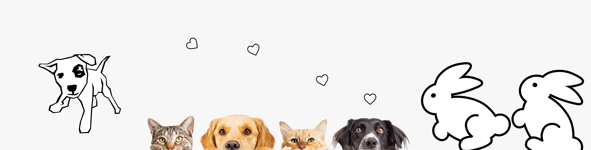
Context of our research
Students often rent the spaces they live in and move often. For student pet owners, even within pet-friendly apartment complexes, they are typically not allowed to alter any of the internal structures such as walls. Based on the feedback from students about the desire to save space, we decided to design a bookshelf that integrates a cat space in which the owner can customize and easily be broken down and built up making it easy to travel with.
Stakeholders
Students or young professionals with house cats & their cats
Contextual Inquiry
According to our initial observations, our team decides to focus on the shopping experience at the mall as the design space. We chose this context because we wanted to see the potential reasons that more people choose online shopping, and we were interested in design spaces that could make the shopping experience easier and more enjoyable.
One of the issues that stood out to us was taking pets to the mall and issues that pet owners have when they take their pets to the public space. We looked into previous instances of animal-centered design when deciding to work with pet owners, such as technology that keeps pets entertained inside the house while their people are absent.
Collecting user insights
By conducting interviews, we wish to explore how/where/when/why pet-owners travel with their pets and what interactions come out of it. We conducted a total of 12 interviews. Research was primarily conducted around UTC, as well as residences and areas around downtown San Diego, which is known to be a dog-friendly place. We watched dogs and their owners and took notes, as well as communicated with them about their daily experiences, conveniences and frustrations, with taking their dogs places.
In order to organize and synthesize our interview findings, our team created an affinity diagram using sticky notes.
In our discussion, we found trends and similarities from what we heard from interviewees. We created section titles including: transportation, dog care, scouting issues, human emotions, dog emotions, locations, time, and social. Under each section, we recorded key words that our interviewees mentioned.
Persona
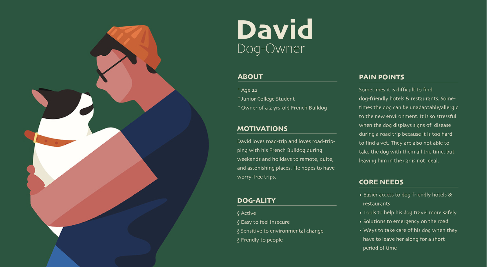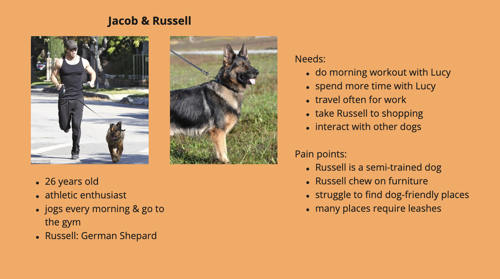
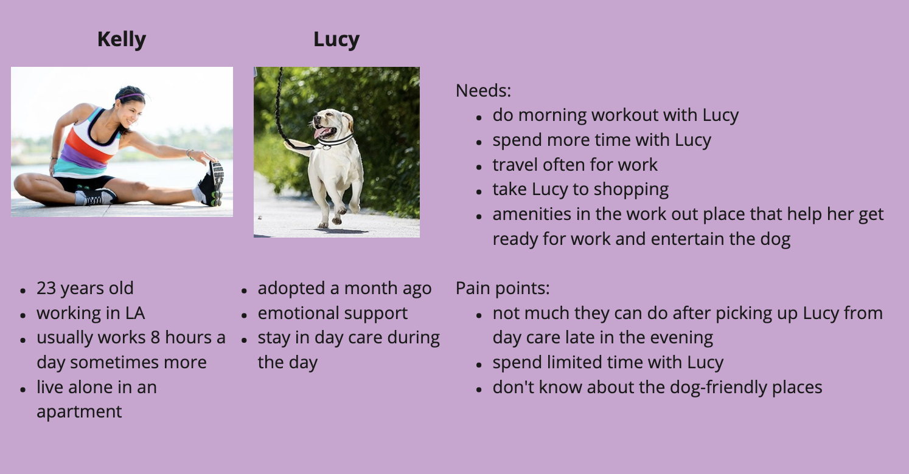
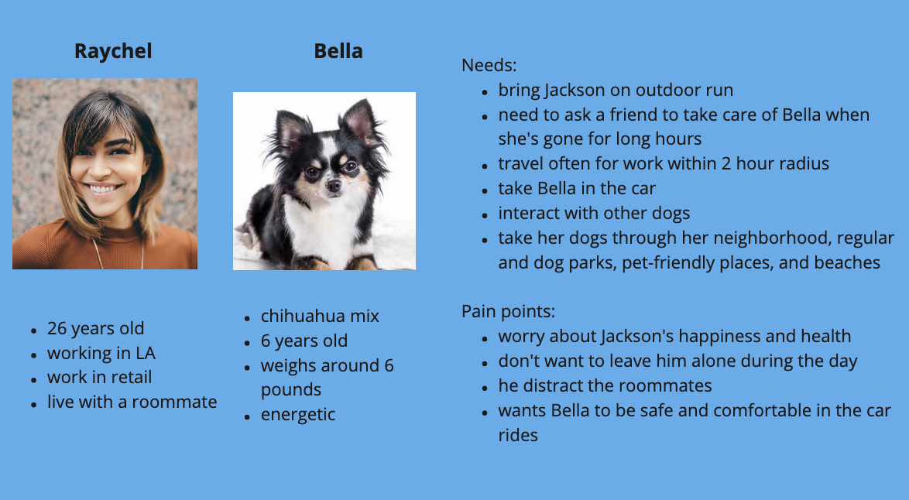
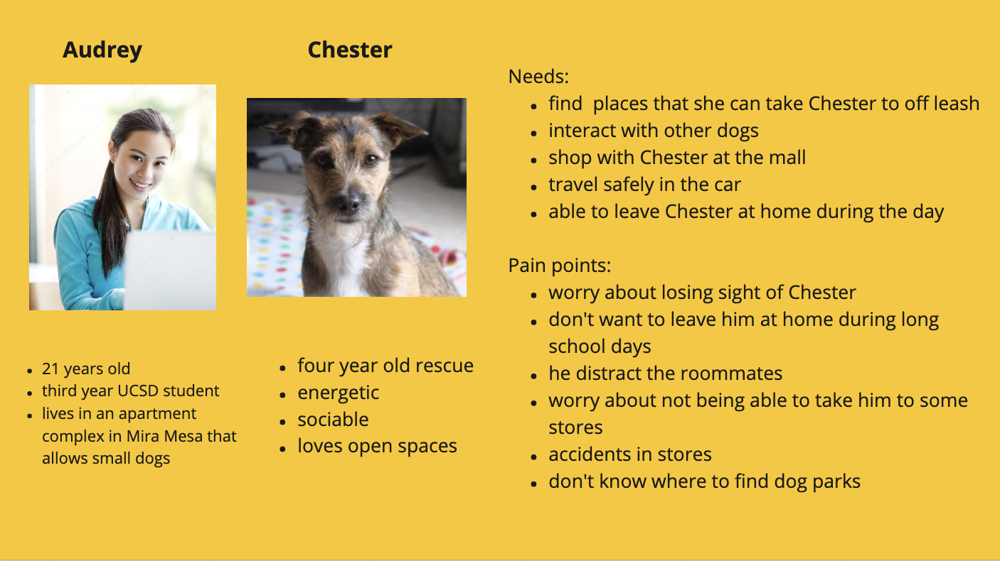
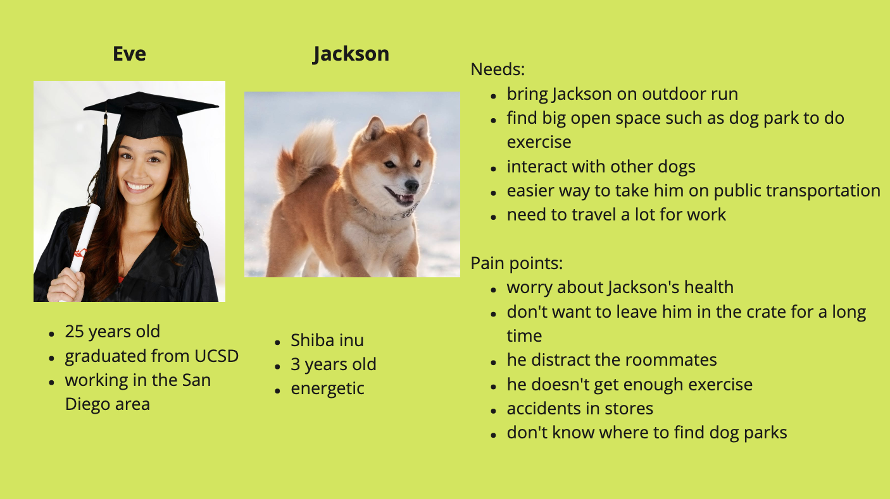
Storyboarding
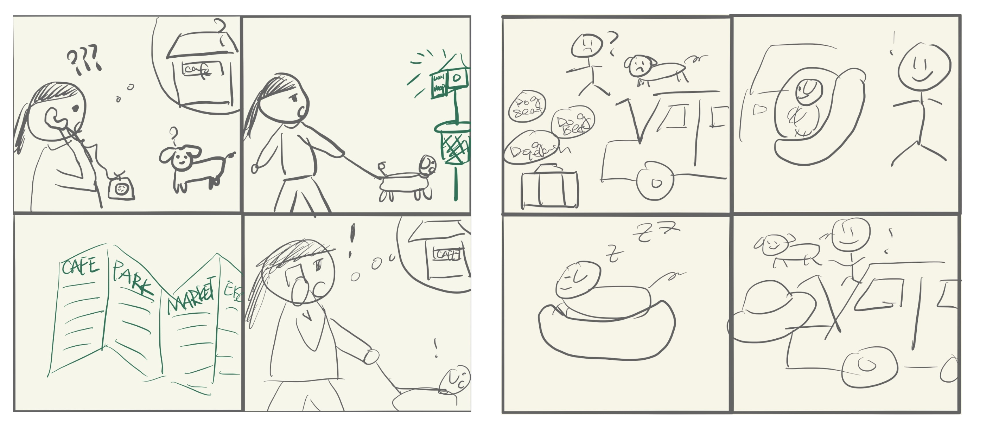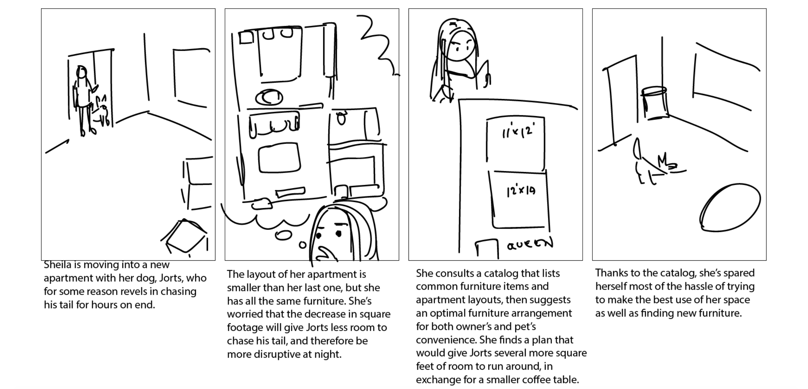
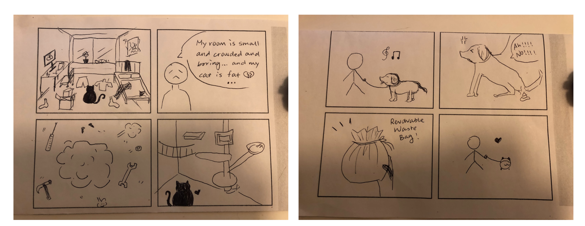
Ideation
We ideated some potential design directions which were (1) A map containing the locations of pet-friendly locations in San Diego. (2) Redesigning a dog seat for dogs that prefer to sit in the front seat. (3) Designing furniture/space for pets. We came up with these ideas after using the affinity diagram and reinterpretation sessions of the data. We converged our design direction to cat furniture after receiving feedback from Professor Scott. A major group of people in our interviews are college students that are pet owners. Most of them live with their roommates, and usually they only have one room to put all of their stuff (and their pets) in, making their room crowded and untidy.
Brainstorming for solutions
After researching about potential materials to be used for the furniture, we agreed that paper and cardboard would best fit the prototype rather than wood which is not as lightweight and accessible. We decided to focus on prototyping a collapsible cat tree. We chose this focus because we noticed that students were de-incentivized to buy traditional cat trees because of their bulkiness, making them hard to travel with and store during moves. We saw a possible solution that would improve the health and quality of life of student’s cats in a collapsible cat tree, which could be used as the student moves frequently throughout their young adulthood.
Sketch & Prototype
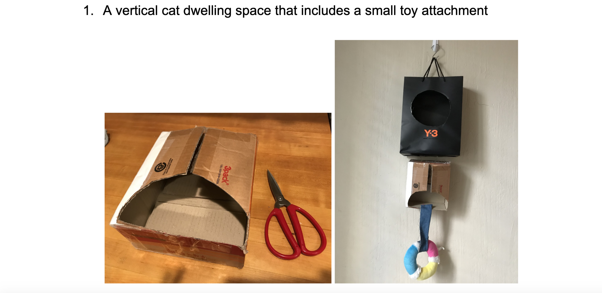 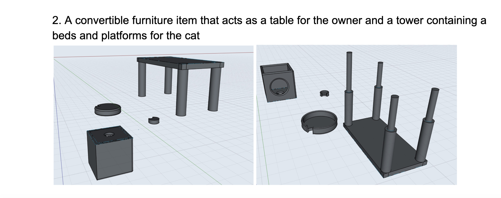 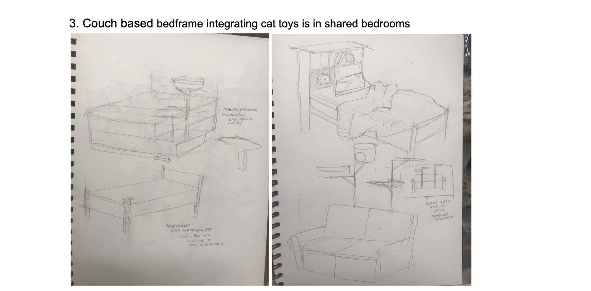 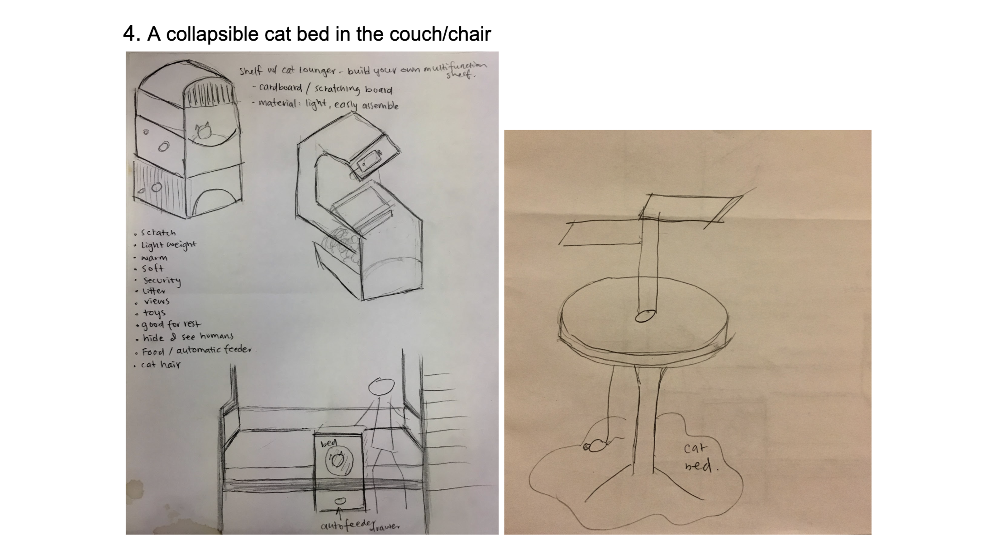 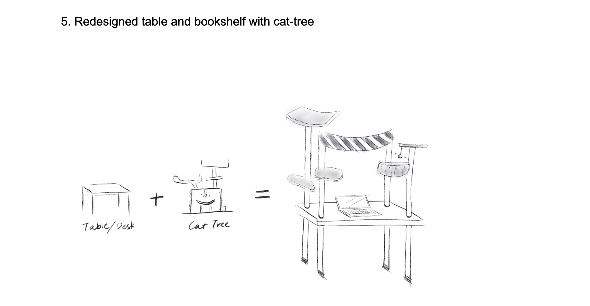 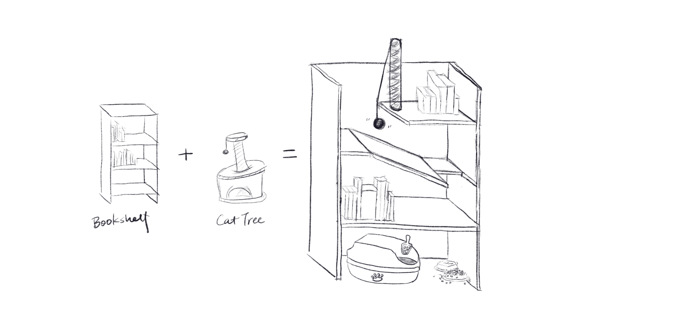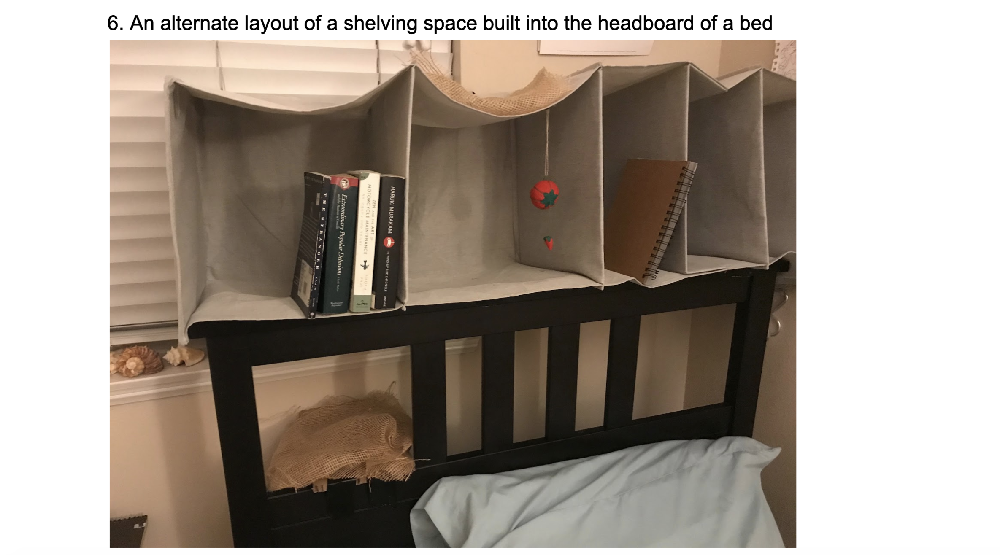
Final Prototype & Testing
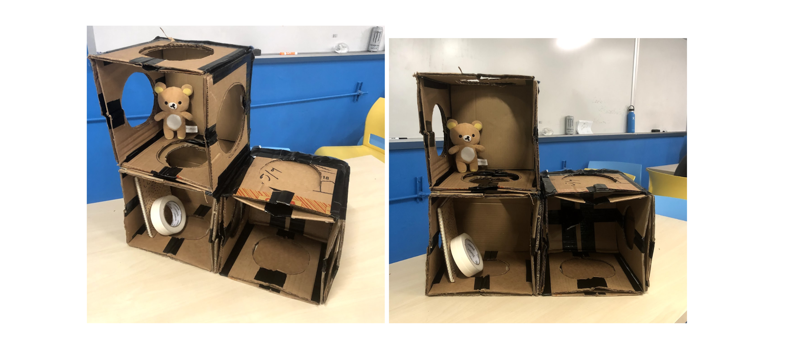Inspired by the foldable storage box in the market, we came to this idea of making individual collapsible boxes that can be stacked up to create personalized bookcase. Every surface (top, bottom, left, right) has a hole of a size that a cat of regular size can easily go through. All of the holes can be covered up with a blocking board that slides into the surface. The users can then adjust which holes to cover up for their books and storage, and which holes to left open for their cat to play through. Upon moving, the box can be easily folded up by removing the back supporting board and two of the blocking boards on the left and right side (if any). The boxes then become flat and can be stacked up within 30 seconds.

User testing involved a stakeholder’s cat. The first prototype was introduced to the cat, and catnip was placed inside as a familiarization incentive. Unfortunately, the cat didn’t express much interest in entering and playing inside over the couple nights after being introduced to the product. The human, however, did approve of the idea. Our results during prototyping were primarily informed by human feedback, driving us to consider what kind of furniture people would need and use.
Results involving the cat were inconclusive, as there might not have been enough time for the cat to familiarize herself with the structure, or even enough structure and stability for the cat to explore, and we wouldn’t have been able to interview the cat about her experience. This highlights an issue with designing for cats as opposed to traditional human centered design, as most interaction with cats does not guarantee a constructive response.
After receiving feedback and discussing the design, the possible materials in use for our ideal design is plastic for the main wall structures and metal hinges with clamp supports to stabilize the foundation of the structure. The cat toys would be made out of plush and the cat wall would be made out of sisal rope.
Reflection
We have learned how Human Centered Design, as a bottom-up design process, represents the idea of Design with Intentionality. At the beginning of the project, we were lost in thinking about the actual design ideas, but ignoring the process of listening to our stakeholders and hearing what they need. After learning more about early stage design research, we began to think about the “WHY” question, and to listen to our friends of what we need, to discover the problem we want to solve. It’s about finding the problem, not coming up with the problem.
In this process, we learned how to scope a project, and extract key concepts from every idea and analysis the ethics behind each one.
We also learned valuable design techniques, like storyboarding, prototyping with digital tools like 3D modeling softwares, prototyping with VR/AR technology, and prototyping with physical material like cardboard.
Team Members
Siyuan Gao, Xirui He, Nhu Nguyen, Johnrey Pahed, Yimeng Sun, Brittany Chen
Back to Projects
© 2020 Xirui He
© 2020 Xirui He